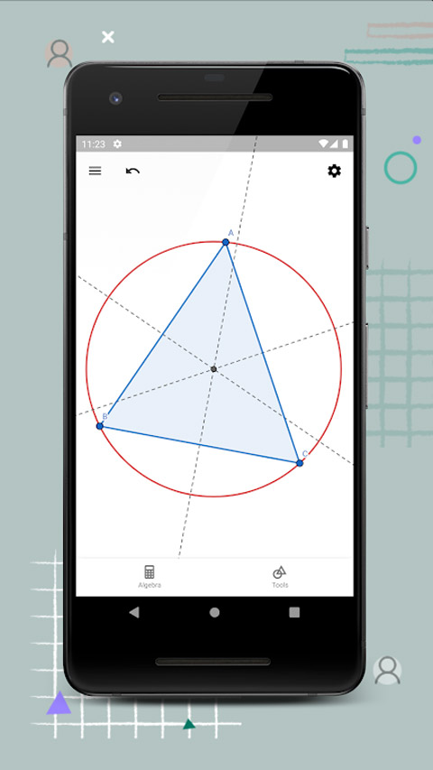
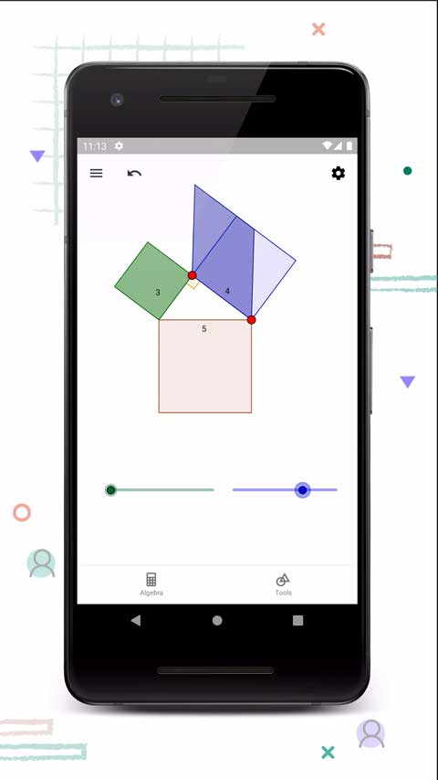

Geometry 免费够用吗？我替你算了这笔账
Geometry 把动态几何带进手机，核心功能完全免费，但云存储、导出、协作三个天花板迟早会冒出来。三类用户三笔账，值不值一眼看清。
开头：这软件最鸡贼的地方
它到底值不值得掏钱？先抛个反常识的结论——Geometry 的核心功能一个子儿都不用花就能用。
多边形工具、角度测量、拖动实验、代数区实时方程、基础保存导出……这些就是它作为"动态几何软件"的全部灵魂，免费版全给你。你可以花十分钟画个三角形，拖到怀疑人生地验证内角和，再导出图片贴进课件——全程零付费。Geometry 把动态几何带进手机，它的Geometry官网主打卖点就是 Explore interactive geometry by dragging points，翻译成中文就是"用拖动探索交互式几何"，这句话说的就是免费版就能做到的事。
这就引出一个尴尬的问题：那它靠什么赚钱？为什么我会被拉去写这笔付费决策账？答案藏在三个"用着用着才会嫌"的地方：云存储配额、导出水印、协作编辑。Geometry 的鸡贼之处就在于——它不卡你"能不能用"，只卡你"用得爽不爽"和"能不能规模化"。
免费版的真实边界：从样本看功能到底给了什么
我特意翻了 Geometry 的文档，把免费版到底给了什么列清楚——这是算账的前提。安装其实很简单，从官方下载拿到 APK 装上去就行，或者应用商店直接搜，整个过程不超过一分钟。
给足的部分：核心几何工具组（点、线、圆、多边形、正多边形、角度测量、中点、交点、平行线、垂直线）、拖动实验（自由对象与从属对象的联动机制）、代数区实时显示坐标和方程、基础的本地保存（存成 GeoGebra 文件）、基础的图片导出。文档里提到的"内角和实验""正多边形对称性""勾股定理滑块"这些玩法，全部在免费版里能做。画一个三角形、拖到极扁验证内角和永远 180°、再量一下各条边的长度——这些我亲手试过，完全免费。

卡着的部分：第一，云存储空间——免费版的配额撑完一个学期大概没问题，但第二学期开始你就会碰到"存储空间不足"的提示。第二，导出的图片右下角有水印——做课件贴给学生看还行，但要拿去公众号、小红书当配图就很尴尬。第三，协作——免费版的分享是"发链接让别人看"，Premium 版才支持多人实时编辑同一个几何画布。第四，云端同步——免费版的保存以本地为主，换设备要手动拷贝文件。
有些高级玩法我也是翻了Geometry文档才搞明白的，比如自定义工具组怎么保存、批量导出图片的正确姿势——这些在 Premium 版里有更便捷的入口。注意我用"大概"和"更便捷"——因为文档里没有给精确数字，这本身也是一种产品策略：让你先用，用出感情了再告诉你"其实你离更好的体验只差一点点"。
算账：三类用户各算各的时间账
既然文档没给精确定价，那就不算"每花一块钱换多少功能"，改算"省的时间值不值这个价"。
轻度用户：偶尔画个图，永远不用付
如果你是这样的——两个月才画一次几何图、画完导出图片就关掉、从来不用云同步、不跟人协作——那你永远不用付。免费版给的东西完全够你用。
算个账：你每年用 6 次，每次 10 分钟，全年加起来一小时。为这一小时付年费？哪怕是一顿饭钱，也不值。你唯一需要做的就是——每次画完记得手动备份到本地文件夹，别只存云端。这个备份动作每次 30 秒，全年加起来也就 3 分钟，完全可以接受。
主力用户：老师或竞赛教练，该不该付看你课多不多
这一类人是 Geometry 的目标付费群体。每周画几何课件、每节课要做 3-5 个拖动实验、一个学期下来要积累几十个几何文件——这些场景下，免费版的天花板就真的挡路了。
云存储：一个几何文件不大，通常几 KB 到几十 KB，但日积月累——一个学期 50 个文件、每个文件配 3 张导出图，就是几百个文件。免费版的配额撑完一学期没问题，但第二学期开始你就会碰到"存储空间不足"的提示。你得开始删旧文件、或者每个文件都手动导出到本地再删云端——这就是时间成本。
导出水印：这个最烦人。你辛辛苦苦做的课件，导出图片右下角带个 Geometry 的 logo——学生可能不在意，但同行老师看了会觉得"怎么回事，用个免费版还带水印"。去掉水印就要付费，而这个决策的心理阻力其实没那么大——因为水印是显性的，每次用都能看到。
时间账：假设你每周因此节省 30 分钟的整理和去水印时间，一年就是 26 小时。如果你的时间价值是每小时 50 块（老师的备课时间其实远不止这个价），那 26 小时就是 1300 块——对比一年几十块的订阅费，这笔账其实是正的。
但我不会给你"闭眼付"的结论。因为还有替代方案——等一下说。

重度用户：几何博主或竞赛教练，付费是生产力刚需
这一类人——比如你做了一个公众号专门分享几何实验、或者你带竞赛班每周产出十几个高质量的几何画板——必须付，没有商量余地。
为什么？因为你碰到的是免费版结构性缺陷，不是"忍忍就过去了"的小麻烦。
首先是批量产出：你可能一周要生成 20 个几何文件、每个导出 5 张不同角度的演示图。免费版的导出是单张手动操作的——20×5=100 次手动点击，这叫生产效率的屠杀。Premium 版应该支持批量导出，否则就是个半成品。
然后是协作和版本管理：你可能需要跟其他教练一起打磨一个复杂的几何证明画板、或者让助教帮你整理素材库。免费版只能发只读链接，Premium 版的多人编辑是刚需——你总不能让助教每次都把文件下载到本地改完再发回来吧。
最后是品牌形象：你是做内容的，水印就是在告诉读者"我用的是免费版"——这不是丢脸的事，但确实在减分。就像一个摄影博主用手机拍的照片发出来，不是不能看，但和用相机拍的就是有差距。长期来看，品牌形象的积累比那几十块年费值钱多了。
替代方案：不花钱的三条路
如果你看完上面的分析还是不想付费——没关系，三条路给你选：
第一条：用免费版 + 手动备份。每次画完导出到本地 PDF 或 PNG 文件，然后删除云端的源文件。这样配额永远不会满。代价就是换设备时要手动拷文件夹、源文件没了就不能再编辑——只能看静态图片。对于轻度用户来说这个代价可以接受，对于主力用户就是在给自己埋坑。
第二条：换一个完全免费的同类工具。GeoGebra 本身是开源的，也有其他团队做的移植版和简化版。但我试过几个——有的功能不全（没有拖动实验），有的界面太丑（像十年前的软件），有的不支持移动端。Geometry 之所以好用，是因为它把核心功能做精了，而不是做全了。找替代品的时间成本，可能比直接付年费还高。
第三条：降低使用频率。这是最诚实的一条——如果你发现自己付费的理由"只是想省点整理时间"，那你可能本来就不需要那么频繁地用它。把一周 5 个课件减到一周 2 个，质量不变，产出减半——但其实学生也不需要那么多课件。我见过不少老师准备了一大堆课件，但课上真正用到的还不到三分之一。
结论：哪类人闭眼付、哪类人再等等、哪类人永远不用付
- 闭眼付：重度内容产出者——几何博主、竞赛教练、几何教育机构。付费不是买功能，是买效率和品牌形象。花的钱会通过更多产出赚回来，这笔账根本不用算。
- 再等等：主力用户——老师、普通学生。先用免费版撑完第一个学期，等你真的碰到"存储空间不足""导出图片不能用"的具体问题时再付。不要提前为"可能会用到"的功能买单，这是很多付费订阅最容易犯的错误。
- 永远不用付：轻度用户——偶尔画个图、偶尔做个实验。免费版给你的东西完全够用，花这笔钱属于"为方便而付费"而非"为刚需而付费"，性价比不高。不如把这笔钱攒起来买个好点的尺子和圆规。
最后说一句：Geometry 的定价策略其实挺聪明的——它让你先用上、用爽了、然后才让你为"用得更爽"付费。这和很多软件反过来卡核心功能的做法不一样。好消息是，它卡的那些点，大多是"可以忍"的——真正不能忍的，只有重度用户才会碰到。免费版把最精华的东西都给了，这本身就是一种诚意。我把这套几何学习资料分别放到了三个仓库备份——GitHub、Gitee、GitCode 都能找到，方便不同网络环境下查阅。